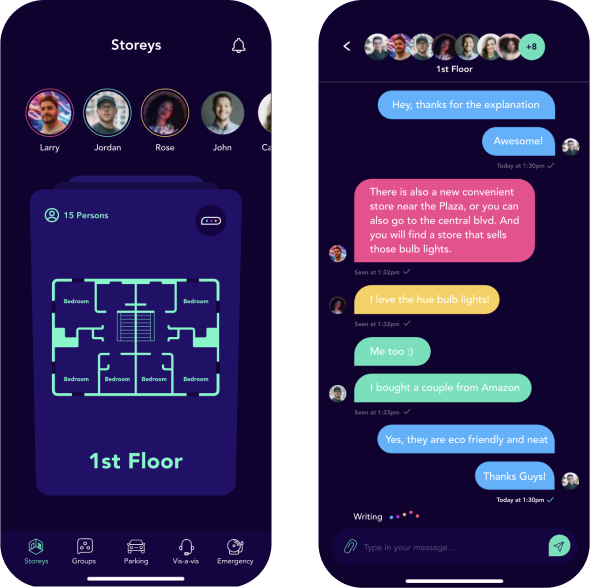
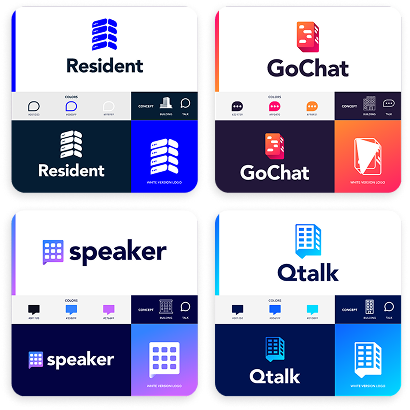
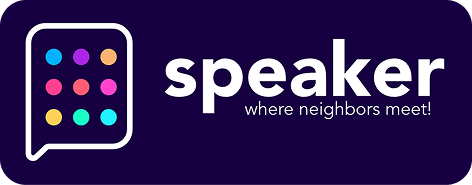
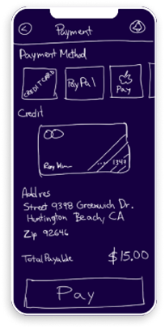
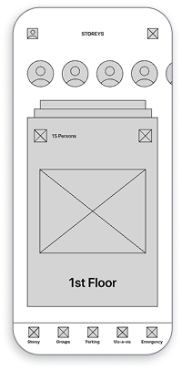
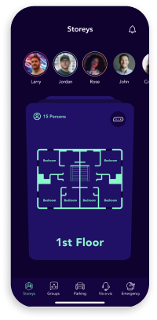
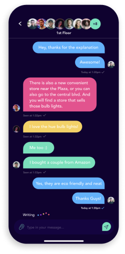
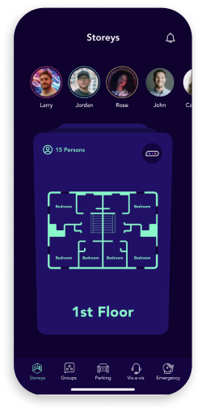

Community connection platform for urban residents — privacy-first architecture for shared residential spaces.

A real estate and property company approached me to design a community connection platform for residents living in the same private building. The target audience was busy young professionals aged 18–35 who needed a simple way to connect with neighbors, book shared spaces, and stay informed about building events.
The real challenge was harder — design a system where residents could coordinate shared spaces, communicate directly, and access building services without feeling surveilled or socially pressured. The line between useful and invasive had to be designed explicitly, not assumed.
The core tension wasn't technical — it was architectural. A building app that feels too social gets abandoned. One that's too transactional misses the point. The design had to hold both: enough connection to be useful, enough privacy to feel safe. Every feature decision was filtered through that constraint.
Speaker wasn't a visual problem — it was a system one. Three constraints shaped every decision that followed.
Starting from the brief, I ran through four naming and brand concepts before landing on Speaker — a name combining 'speaker' with the idea of storeys and floors, visually represented by a speech bubble icon made of colorful dots arranged like a building grid.

I tested at low, medium, and high fidelity — moving from hand-drawn sketches to mid-fi screens to final UI. User testing with real residents shaped key decisions, particularly around group organization by floor and the emergency contact feature which emerged as an unexpected priority.

The colorful, high-contrast chat UI was a deliberate choice to make the social layer feel warm and approachable — distinct from the cold utility of most building management tools.



The floor plan visualization on the main screen gave residents immediate spatial orientation within their building — something no competing product was doing at the time. Navigation organized by floor and interest group made the community feel tangible, not abstract.

The product was implemented by the client and deployed to real residents. User testing confirmed the core flows were intuitive across the target age group. The client planned to scale it across additional buildings — validating that the privacy-first approach didn't reduce adoption.

I'm currently open to Senior Product Designer opportunities in fintech, B2B SaaS, and digital identity.